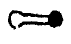

欽定四庫全書總目卷九
國朝鄭賡唐撰賡唐縉雲人前明天啟丁卯舉人官至福建按察使僉事是書序稱丁亥蓋成於順治四年經文全用注疏本每卦之末附論一篇多經生之常義至繫辭舊雖分章然自漢晉以來未有標目賡唐直加以天尊章設位章諸名則是自造篇題殊乖古式又說卦章次亦加刪併而不言所以改定之故更不免變亂之譏蓋猶明季諸人輕改古經之餘習也
國朝胡世安撰世安字處靜號菊潭井研人前明崇禎戊辰進士歷任少詹事入國朝官至大學士是書專主闡明圖學彚萃諸家之圖各爲之說雖亦及於辭變象占而總以數爲主其閏卷則續採明羅喻義讀易珊瑚筯及劉養貞易遺象義之說也
此書爲未刻藁本中多朱墨塗乙其撰人姓名墨筆題東海衲民岳嵐墨山氏述蓋所自書朱筆題江西兵憲岳虞巒衡山氏述爲其同里魯釗所書攷太學題名碑錄前明崇禎辛未科有岳虞巒南直隷武進人又江南通志儒林傳稱虞巒字舜牧官至江西按察使晩尤好易撰有周易感及春秋平義二書書中云幼時及見熹廟初年時代亦復相合然則所謂周易感者當即此書特刻板誤脫義字耳書中又云丙申五月著稿則成於國朝順治十三年疑其明亡以後變服爲僧改名岳嵐故自稱東海衲民也是書惟解六十四卦分八巨冊而朱筆又間有標二編第幾卷者殆本有初編二編經釗刪併爲今本耶其說詳於取象近錢一本之學然皆參以佛氏如稱西域之有迦文猶中國之有羲文周孔云云謬妄非一釗雖多所刋削欲滅其迹而能潤飾其字句究不能改易其宗旨蓋於王宗傳沈作喆之說又變本加厲矣
國朝趙世對撰世對字襄城衢州人兹編論易爲卜筮之書故經秦火而獨存命之曰筮貞謂以筮而貞萬世之變也不載經文惟採先儒議論分類編輯一卷曰綴集本旨曰易學源流曰圖書節要二卷曰蓍法指南三卷曰占變詳考四卷曰易道同歸論筮法與占變條理頗爲詳明蓋純以數言易者也
國朝徐繼發撰繼發字繩武貴溪人其書專以後天諸圖爲主由占筮卦氣而蔓衍於律呂等韻前有自序謂後天之道以致用爲主而造化之流行有常有變常者宰之於帝變者藏之於神履其常者以卦爲體通其變者以筮爲用是故帝者流行一定之極而神者造化不測之機也其推闡亦頗極苦心然與講先天之圖者亦同一關紐總爲易外之别傳而已
國朝紀克揚撰克揚字武維號六息文安人是編用注疏本不錄經文但每卦約詁數條皆略象數而談義理詳其文義蓋標識於經傳之上而其後人錄之成帙者也
國朝陸位時撰位時字與偕錢塘人在前明嘗官鄞縣訓導是書成於順治丙戌前有位時自序稱小憤小悟大憤大悟不憤不悟憤之云者心求通而未得之意故曰憤參其書專闡河洛之數而附益以先天之時令後天之節序首列卦爻象彖諸解圖書諸說每條之首設卦難數條卦畫之下列卦旨數條卦後列六爻總論一篇而以字義諸說别標題目參錯於經文之中體例頗爲龎雜前又有黃道周序不署年月中有時值鼎革語考順治乙酉丙戌之間黃道周方從朱聿鍵稱兵閩中勢不暇爲位時作序况方輔聿鍵僭號改元亦決不肯自稱鼎革其爲依托無疑蓋以道周喜談象數與此書宗旨相近故假借之以爲重耳
國朝李開先撰開先字傳一長壽人與嘉靖中太常寺卿李開先名姓偶同非一人也其易學受於鄉人來知德案知德雖嘉靖三十一年舉人其授待詔則在萬曆三十年下距明亡僅四十年故其門人能至順治初尚存故其書詮解象數多推闡其師錯綜之例惟卦變之說與知德不合其中駁本義者頗多而不盡愜當至所自立之新義如說卦乾爲馬而爻詞取象於龍朱子以爲理會不得開先則謂伏羲時龍馬負圖乾雖爲馬而非馬乃龍馬也周公畧去馬字而止言龍非擬之以馬又擬之以龍也云云案乾與震合德龍與馬同性故說卦傳乾「乾」，原書誤作「龍」。震皆取馬象至震之爲龍亦以一索得男體從乾化故二卦皆取龍象聖人繫易偶舉一端不得膠此以疑彼而委曲以遷合之也且爻詞潛見飛躍諸義豈能施之龍馬耶亦好異而不顧其安矣
國朝蕭雲從撰雲從字尺木蕪湖人前明崇禎己卯副榜貢生是書雲從年八十時所撰以數言易而其數乃以律呂曆算爲宗旁及於三命六壬之術前列易存四學一條稱學者先讀易卦爻詞大傳蓍法次學卦氣以及支干陰陽五行生剋氣運衰旺次學算歸除因乘次學音律詞曲聲調管絃以及翻切諸法方得其說頗屬支離夫奇偶陰陽爲萬事萬物之根本故易道廣大推之無所不通律呂爲易中之一理非因律呂作易亦非因易作律呂也曆算亦易中之一理非因曆算作易亦非因易作曆算也即以醫術而論榮衛者陰陽也七竅者奇偶也心腎者坎離之宅也其消長則姤復之機其升降則旣濟未濟之象也至於五運六氣司天在泉無一不與易理通亦將曰因醫有易因易有醫乎哉王士禎池北偶談嘗記雲從作杜律細一書凡吳體抅句俱强使協於平仄如盤渦浴鷺底心性句則讀底爲高低之低江草日日喚愁生句則讀草爲離騷之騷此書言易殆亦類斯與連江童能靈作律呂古義二卷純以河圖洛書爲聲音之本者均可謂誤用其心矣
國朝張爾岐撰爾岐字稷若濟陽人篤守朱子之學因作此書以發明本義之旨內惟第四卷分爲二故亦作五卷李煥章作爾岐傳云八卷者誤也
國朝謝復茪撰復茪字菁來吉水人其書先列朱子本義以直解大全蒙引諸家之說各系於其下其子能立以圖說未備重加纂訂别爲一編附之於後蓋里塾講授之本也
不著撰人名氏朱彝尊經義攷載孫應龍有周易麈談十二卷疑此本是也應龍字海門餘杭人順治丁亥進士官隰州知州其書多引先儒語錄排比成文或標曰注或標曰解或標曰傳每章之中三名叠見竟莫得而詳其例也
國朝朱奇頴撰奇頴字九愚嘉定人順治辛卯拔貢生官平遙縣知縣此書大槩依附朱子本義而稍參以己說後有附錄一卷則其子所刻墓誌行狀也
國朝葉矯然撰矯然字思菴閩縣人順治壬辰進士官樂亭縣知縣是書於每卦象爻各證以史事蓋仿李光楊萬里二家易傳之意而所舉不免於偏枯夫易道廣大無所不包而不膠柱於一二事文王箕子偶引以明卦義無所不可至於每象每爻必求其事以實之則挂漏牽合固其所矣
國朝王芝藻撰芝藻字淇瞻溧水人順治甲午舉人其書論九疇本於洛書謂萬物之生始於五行故五行居一皇建有極爲天地人物之主故皇極居中天時人事之應盡於五福六極故福極居九三八政王者所以治明七稽疑王者所以合幽此中央四正所以立其幹也五事盡乎人事五紀考乎天時故居肩之左右三德以輔皇極庶徵以驗五行故居足之左右宋人九疇自九疇洛書自洛書之說未足以窺易書之奥蓋芝藻並主象數故立論如此然繫辭雖有洛書之名而所謂洛書者實未明指龜文後人影附太乙九宮之法以造洛書因而牽洛書以解易是徒借洛書之名而非孔子所謂洛書也芝藻亦眩於舊文未之深考耳
國朝張完臣撰完臣字良哉平原人順治乙未進士是書皆訓釋文句不及象數大旨取朱子本義爲主而附益以諸家之說於吳璉訂疑蔡清蒙引姚舜牧疑問所引尤多間亦附以己意所注僅上下兩經而無繫辭以下蓋用程子本也
國朝張沐撰沐字仲誠上蔡人順治戊戌進士官資縣知縣沐於五經四書皆有疏畧其解周易自謂悉本孔子十翼之義所注多取舊文融以己意不復標古人名氏書中力排京房陳摶邵康節之學而摶等所造河圖洛書及伏羲文王諸圖仍列於卷首其洛書條下注曰聖人因之以明吉凶著於易之首是竟以今本九圖爲孔子所定也又揲蓍求卦必自內而外由初而上故古本相傳卦畫之下所注皆先下後上沐獨用朱睦㮮之例改爲先上後下於卦爻之始初終上繫辭之小成大成俱無一可通前有康熙庚申趙御衆序稱韋編以來易學久晦得此書乃明又有王渭序稱孔子之說有不可易則張先生之說亦不可易沐自謂朱子之所不能解者繹諸孔訓恍然來告敢曰獨信亦談何容易乎
國朝周漁撰漁字大西興化人順治己亥進士官翰林院編修是書前有自序稱與朱子本義程子傳及古今來言易之家大相乖戾謂直接加年寡過之學漁不敢當也謂四聖人覺世明道之旨不欲終晦於天下賴四聖人之靈竅吾之聰鑿吾之明假吾之心慮口宣以代爲發之也是則何能辭其自命甚高今觀其書非惟盡反漢宋諸家之說併繫詞文言亦指爲非孔子之說橫加排詆即彖傳亦有所去取末附一卷闢洛書之僞首弁一卷别衍河圖之奇偶而深斥繫辭太極生兩儀兩儀生四象四象生八卦之文所解六十四卦亦多創論如謂乾卦以龍喻性六爻皆言見性盡性見羣龍無首猶言見性而實無所見要之性亦强名見亦落見故增此以掃六爻名象之迹謂復卦言賢人之去就先儒作復善解不知何所見而云然其翻新出奇大率類此亦可謂好怪矣
國朝湯秀琦撰秀琦號弓菴臨川人順治中由歲貢生官鄱陽縣訓導是編取周易圖說爲之發明使淺顯易解舊有圖者因圖而推衍之舊有說而無圖者補圖以證佐之蓋於易專主數於數專主宋學者也
國朝郁文初撰文初號郁溪蘄州人官至肇慶府知府此書爲河間賈棠所刊凡總論一卷上下經九卷繫辭上傳三卷而繫辭下傳至雜卦傳則皆標卷下以統之不復分析卷目蓋編次者之失也書中首推河洛縱橫曼衍不出常談至於各卦彖爻立論尤多僻異大率以五行生剋精氣骨肉爲言如解需于血出自穴則云乾者精氣之極而血脈之生通之中行需是已坤爲血脈之極而精氣之生通之中行晉是已出自穴者謂人自有生以來耳穴已有而今則天地通水自穴中出也目苞之啟亦由是也解入于左腹獲明夷之心于出門庭則云明之入也自右腹而下自左腹而上意巽也火復則風生心開則意隨蓋愈鑿而障礙愈多矣
國朝陳圖撰圖字奇巖永豐人是書以太極先天河洛諸圖合而演之支離蔓衍不可究詰如周子太極圖以無極作一空圈此則變爲一純黑圈形以爲陽含於陰至太極圖乃爲半黑半白圈是先生陰而後生陽非太極生陰陽也又以名山大川分配六十四卦之陰陽尤爲牽合昔林至水村易鏡以卦配星以爲仰觀天文此更以卦配地以爲俯察地理此非惟聖人作易慮不及此即邵子周子傳陳摶之圖豈料其末流至此耶其詮釋經文每句皆隨意叶韻如象傳天行健君子以自强不息則以天行爲一句健爲一句君子以自强爲一句不息爲一句而注曰行叶杭息叶襄坤卦初爻則注曰六叶翕至叶室殆不知其何據他如雲行雨施飛龍在天之類必破爲二字一句雖嫌繁雜理尚可通至於乾卦三爻以君子終日爲一句乾乾夕惕爲一句若厲爲一句无咎爲一句則君子終日四字不知是何文義矣又經文之中多間以圖其圖皆奇形怪狀如文言傳見龍在田節下附一物欲所蔽圖作純黑壺盧形上段分布五小白圈中書人欲一萌血自攻心云云四言詩十二句下段則書慾海茫茫不計深其中灼灼産黃金云云七言詩八句左右注致知格物四字下注云此亦黑體用陰文其圖大抵皆類此多非經文之本意也
國朝王艮撰艮字無悶號不菴歙縣人是書每條皆泛論易理不標經文凡與人問答書中有論易者亦節錄附入自序云漢儒亂其數宋儒鑿其理其有合於易而不失厥旨者要非全易矣然大旨仍主義理而不言象數經義考作一卷稱其友始安吳懷鄱陽史白序之今二序並存而卷分爲二題曰王煒蓋艮之初名也
國朝吳舒鳬撰舒鳬一名逸字吳山吳縣人是書惟釋大象蓋因杭人施相周易大象頌而作每條附以贊語其中改天行健爲天行乾天地交爲地天交之類其子向榮跋語述其父言稱不闕疑而改經文獲罪千古蓋已自知之矣前有施相傳謂崇禎乙卯相年十七明崇禎無乙卯當是己卯之誤也
國朝徐世沐撰世沐字爾瀚江陰人江南通志列之儒林傳中稱其與陸隴其相契考隴其三魚堂中有世沐四書惜陰錄跋蓋亦講學家也其解經皆以變爻爲主蓋宋都絜之緒論其法爲太卜舊法其說則不免於空談
國朝徐世沐撰其文與周易惜陰錄並同蓋自覺其冗雜删爲此本非别一書也
國朝徐世沐撰是書取經傳字義分題賦咏或爲四言贊或爲五言七言詩多至一千餘首蓋本張九成論語詩例而益蔓衍之其惜陰錄用呂祖謙本此集所列彖爻象傳次第則仍用王弼本其文皆體近歌括不可入於詩集今仍附之易類焉
國朝邵嗣堯撰嗣堯郇陽人康熙庚戌進士官至江南提學副使其言易以河洛之數一乘一除小圓圖即小橫圖之順往逆來大橫圖即小橫圖之因重成爻大圓圖即小圓圖之運行寒暑方圖即大圓圖之乾君坤藏文王二圖實由此變而通之蓋本於皇極經世者爲多末附以揲蓍之法自序謂一刻於都門再刻於上谷三刻於襄陽屢有改易此本刻於康熙甲戌凡四易稿云
國朝陳詵撰詵字叔夫號實齋海寧人康熙壬子舉人官至禮部尚書諡淸恪其書取六十四卦每兩卦爲一篇前列經文而綴總論於其後前無序文亦無凡例觀其兩卦合并之意有以陰陽相反言者乾坤剝夬復姤坎離震巽艮兌臨遯是也有以上下反對言者屯解蒙蹇需訟師比泰否未濟旣濟同人大有隨歸妹无妄大壯晉明夷是也有以卦名比合言者小畜大畜小過大過損益是也有以雜卦連合言者咸恒家人睽豐旅渙節萃升是也至於旅與謙豫與漸蠱與困觀與頤噬嗑與中孚賁與革升與鼎則未審其所以合併之意矣
國朝潘元懋撰元懋字友碩鄞縣人是書成於康熙壬子以朱子本義爲主逐句發明如注之有疏又以章旨節旨及敷衍語氣者冠於上方所謂坊刻高頭講章也
國朝劉蔭樞撰蔭樞字喬南韓城人康熙丙辰進士官至貴州巡撫是編用王弼之本但有六十四卦而無繫辭以下其說多因朱子本義而小變之然措語蹇滯多格格不能自達其意
國朝徐善撰書首有沈廷勱序稱爲南州徐敬可則當爲南昌人而善自署曰嘉禾考朱彝尊曝書亭集有徐敬可左傳地名考序又閻若璩潛邱劄記亦稱秀水徐勝敬可爲人作左傳地名考云云其字與里貫皆合惟名有異未知爲一人二人也其書成於康熙丙辰不載經文亦不及十翼惟六十四卦各爲一篇條舉其義而論之才辨縱横而頗浸淫於佛老
國朝應撝謙撰撝謙字嗣寅錢塘人康熙己未嘗舉博學鴻詞是書朱彝尊經義考作十七卷此本僅十三卷然首尾完具不似有所佚脫或彝尊偶誤耶其注雜採諸說故名集解所取多依文訓詁之說未爲精密首列諸圖爲上經三十卦下經三十四卦多寡不均乃創爲上經三十六卦往來之圖下經三十六卦往來之圖一往一來共成七十二卦尤爲枝節
國朝趙振芳撰振芳字香山山陰人是書列古本圖書古本易經爲首卷列諸圖與說爲次卷其古本周易集諸家舊本而考其異同於章句文字頗有釐訂惟所載圖說自河洛蓍法五行卦氣而外並及天行地勢之類則不免蔓衍支離夫易爲象數之總推而衍之三才萬物無不貫通故任舉一端皆能巧合然於聖人立象設教之旨則究爲旁義也
國朝徐在漢撰在漢初名之裔字天章晚年乃易今名字寒泉歙縣人初與趙振芳同著易原後復自作是編曰或者疑不自信之意也書中不載經文止按其節次自爲解義復兼採諸儒之說皆未見精要卷首列觀玩要領一篇其第二條謂爻辭繫於文王而非周公然文王作彖辭周公作爻辭自馬融陸績以來相沿無異在漢乃欲去周公而存三聖亦過於臆斷矣
國朝張問達撰問達字天民江都人前有康熙己未廣平冀如錫序稱其得力於陽明良知之學故其書黜數崇理而談理一歸之心力掃卜筮之說未免主持太過問達自序首推王弼又引王守仁箇箇人心有仲尼及求諸我心之是諸語是即陸九淵六經注我之說也宜有取於弼之虛無矣
國朝浦龍淵撰龍淵字潛夫吳縣人嘗佐洪承疇幕以承疇薦授城歩縣知縣其書名易通者謂六爻之義本一理四聖之旨本一貫自說易者解以己意遂致卦詞不通於象詞下卦之詞或不通於上卦之詞故六十四卦各立論發揮於卦義爻義或逐條剖析或連類推闡務使相通而後已其說不爲無見然卦爻之義宛轉相通亦猶一人之身脈絡孔穴宛轉相通也必從一脈以通百脈由一穴以通百穴則必有所隔礙於其際故龍淵所說有時而融洽亦不免有時而穿鑿至旣欲牽合於理學又欲比附於史事縱横曼衍辨而太華是又作論之才非詁經之體也
國朝浦龍淵撰兹編因繫辭包犧氏王天下之文遂謂六十四卦無一非帝王師相之事乃明主良臣所以致太平之書因乾卦六位時乘之文謂六爻中君臣上下各有攸司周公分位繫辭正名定分皆取諸此歷來一切圖書象數卦變等說皆畧而不論夫人事準乎天道治法固易理之所包然謂帝王師相之學當求於易則可謂易專爲帝王師相作則主持太過矣朱彝尊經義考載此書作二十八卷此本少四卷疑亦經義考傅寫之誤也
國朝于琳撰琳平湖人兹編皆因仍舊說依文訓釋罕所發明末列三十三圖亦皆勦襲舊圖而小變其貎其自作者如在天成象圖以日星霞露虹左列爲陽以月漢風霜雪右列爲陰而以雲雨雷電雹霧居中爲兼陰陽殊爲無理在地成形圖以水金山右列爲柔士火石左列爲剛木絲穀鹽並列於中爲兼柔剛尤不可解而成男成女圖作⊙〇之形一陰一陽之謂道圖作形益恠誕矣
國朝沈廷勱撰廷勱字克齋嘉興人康熙中貢生官至商州知州是書一以程朱爲宗凡宋明諸儒稱引程朱之說者摭拾無遺其别有發明者槪屏弗錄前有自序云以心言易未若以身體易之爲實以身體易又必以易見諸用之爲實故名其書爲身易實義云
國朝毛奇齡撰奇齡有仲氏易已著錄河圖洛書辨者旣非一家駁者亦非一說奇齡謂今之河圖即大衍之數當名大衍圖而非古所謂河圖今之洛書則太乙行九宮之法亦非洪範九疇旣著其說於前更列其圖於後其排擊異學殊有功於經義顧其所列之圖又復自生名例轉起葛藤左右佩劍相笑無休是仍以鬬解鬬轉益其鬬而已矣
國朝孫宗彝撰宗彝高郵人是書成於康熙庚申以象數理各有其宗因象而測其數因數而測其理而所宗者以中爲主故卷首冠以中論三篇其說謂河圖洛書五皆居中中五象之宗也五數之中也中理之宗也故名易宗案易所言中皆指中畫過與不及皆因象示戒則謂易爲用中未始不可然必執河圖洛書之五位以爲用中之本則橫生枝節附會經義矣注中於變爻變卦及反對互體之義獨詳而卷首兼論歲運其學蓋出於黃道周而參以他說小變之中間詆斥先儒殊爲已甚又每節之下必注宗彝云以擬象傳尤無謂也
國朝江見龍撰見龍字壽水杭州人康熙中諸生其說易主象與理而畧於數如解屯六四四止而初動有班如之象大壯九三用壯用罔之故旅六二得童僕爲得三爻此類凡數十條皆於經傳有裨惟經前傳後次序昭然漢晉以來或亦析傳以附經從無後經而先傳見龍乃移繫辭說卦雜卦序卦於上下經之前分爲二卷名曰孔子讀易傳則欲尊孔子而不知所以尊矣
國朝姜兆錫撰兆錫字上均丹陽人康熙庚午進士乾隆初薦充三禮館纂修官是書取名述蘊者蓋取通書聖人之精畫卦以示聖人之蘊因卦以發之義大旨恪遵朱子本義如解屯卦六二匪宼婚媾句解否卦否之匪人句舍本義而從程傳孔疏者亦偶有之非其通例也其經傳之次第則於卦畫之後繼以彖辭彖傳於彖辭彖傳之後繼以象辭象傳而乾坤二卦則又割文言傳爲二段分綴於彖象二傳之下其以大小象傳列彖傳後者自謂用今本乾卦之例列彖傳於彖辭後者自謂用今本坤卦之例也然割裂文言又用何例乎旣非今本又非古本殊爲進退無據又旣解本義九圖而卦變一圖其說與本義互異者置不一言亦爲疎漏至訂定雜卦大過以下八卦本蔡淵之說而小變之以漸歸妹旣濟未濟四卦相次爲隔句韻體亦殊勇於改經也
國朝姜兆錫撰是編主先天之學皆根柢圖書演錯綜互變之旨大抵推闡舊說也
國朝黃叔琳撰叔琳字崑圃大興人康熙辛未進士官至詹事府詹事乾隆辛未恩加禮部侍郎銜是編用注疏本以程傳本義爲主雜採諸說附益之中多朱墨校正商確之處蓋猶未定之稿也
不著撰人名氏前署養素堂纂本又有黃叔琳名氏二私印蓋即叔琳所輯錄也其書仿李鼎祚周易集解之例但裒諸說不加論斷然所採錄頗爲簡畧不能括宋人之易學且書名旣題宋元書中乃錄子夏易傳數條而元人說易者竟未採一家其書未分卷帙亦無序目殆猶未成之本也後附易解別錄一冊蓋旁採異說亦僅有宋而無元云
國朝張步瀛撰步瀛字翰仙河南新安人康熙辛未進士是編題其父含命意而步瀛筆受昔房融譯楞嚴經稱爲筆受此注經而襲佛氏之稱蓋偶未檢其凡例稱家傳易學已歷六世自其曾祖至其父與伯叔父及其弟姪均以易得科名人「人」，疑當作「又」。稱易家自明嘉隆以後穿鑿附會置本義程傳不顧惟喜新奇異說見之文者蒙混支離大象傳孔子所著庚辰房書竟認作周公語云云蓋其家傳科舉之學也
國朝冉覲祖撰覲祖字永光中牟人康熙辛未進士改庶吉士是書兼用程傳本義謂朱子分象占程傳說理二書不可偏廢故兼取二家之說低一格以別於經又採諸儒之說互相發明者再低一格以別於二家覲祖時有所見亦附著焉其中亦間有與朱子異者如朱子謂左傳穆姜筮遇艮之八法宜以係小子失丈夫爲占而史妄引彖詞爲非覲祖則謂艮卦只二不變當爲隨旣以二爲八則非六二矣當以彖詞爲是史非妄也又謂文王八卦方位未必分配父母男女較量卦畫陰陽朱子從後推論未必是文王當日之意又不取卦變之說蓋大旨雖出程朱而小節則兼採諸論也至所論卦變謂來知德爲姚江之支派餘裔創立異說以翻程朱傳義之案考王守仁未嘗講易知德亦不傳姚江之學黃宗羲明儒學案列之諸儒案中謂其與陽明相異而惜其獨學無朋師心自用可爲明證覲祖以門戶餘習見近似者而咻之亦考之未審矣
國朝馮昌臨撰昌臨字與肩嘉興人是書分內外二編內編爲說六篇自先天八卦圖以至八卦納甲外編亦六篇自天干化氣五行以至七政四餘蓋欲從漢學而不究古法遂以後世斗首化曜之說參雜而敷衍之可謂逐影而失形矣
國朝王明弼撰明弼字亭二陝西人康熙間官鳳翔府敎授是編取六十四卦大象列本義於前而各敷衍數語於後殊無所發明
國朝吳隆元撰隆元號易齋歸安人康熙甲戌進士官至太常寺少卿其書前後無序跋末闕說卦傳中亦多闕文闕卷又頗有塗乙或注未定本字或注非先生手授本字則隆元草創未竟之書其門人追錄之也大旨取來知德之說以不反對之卦爲錯反對之卦爲綜錯者一卦自爲一宮綜者兩卦合爲一宮上經三十卦不反對者六合之爲十八卦下經三十四卦不反對者二合之亦十八卦總二篇分配之數適符邵子三十六宮之義故以名書
國朝吳隆元撰是編卷一爲考畧次列河圖洛書諸圖其河圖旋毛洛書坼甲二圖云得之朱升易經旁注然升洪武時人非伏羲時人不知何自而見之案旋毛坼甲二圖乃吳澄所傳非始於朱升卷二爲先天後天卦圖卷三爲蓍數太極圖卦象太極圖性理太極圖性理即周子之圖餘二圖隆元所造也卷四爲參伍錯綜圖爲納甲爲卦變卷五爲啟蒙三十二圖而附以占例私言大抵力闡陳摶之學其辨歸有光先天圖晚出一條謂舜典首二十八字齊建武時始出學者未嘗疑之豈先天四圖不可出於太平興國時是又未考經典釋文之語矣
國朝朱江撰江字東注江都人是書成於康熙丁丑其凡例有云是編原爲便舉子業凡可備大小試題者著其精意餘止存經文蓋鄕塾課蒙之本也
國朝張德純撰德純字能一號松南長洲人康熙庚辰進士官常山縣知縣是書專以十翼解經其說謂經本無陰陽剛柔之名及天地風雷水火山澤之象皆夫子所顯示以闡經故曰孔門易緖爲目凡三曰經緖說上下經也曰傳緖說繫辭說卦序卦雜卦也曰緖餘則以諸家易圖爲未善而以己意推衍自立新圖新譜也別以引緖冠於首則總論也其說與諸家迥異蓋易道廣大隨引一端推衍之皆可成理耳
國朝朱襄撰襄無錫人是書成於康熙庚辰卷首爲易圖說凡十二圖其以九數爲河圖宗劉牧之說而以洛書爲八卦又與牧異其尚占一圖獨有圖而無說殆傳寫佚之歟次爲讀易字義凡十四篇其說無一不與前人相反蓋不究聖人立敎之本而惟黑白奇偶之是求其勢必至於此不足異也其讀易字義序稱命之曰易韋而撮取大傳中之字推明其義凡十四則冠於易韋之前然則易韋别有全書此特其卷首圖說及字義耳
國朝戴虞臯撰虞臯號遯軒崑山人是編原稿凡三四百紙虞臯自以爲太繁刪存十之一二其子孫貽又以爲太簡復採原稿補其遺缺即此本也書成於康熙壬午前有孫貽序後有虞臯從子鑑跋大旨斥象數而明義理故名曰闡理首冠授易源流一篇分言數言理二宗於漢以來諸儒之學皆有所排擊惟推尊郝敬之書持論頗偏其述數學以爲老子傳鬼谷子後焦延壽得之以傳京房陳摶得之以授穆修李之才以及邵子按老子與孔子同時鬼谷子與蘇秦同時相距百有餘年邈乎無涉不知老子之易何以得傳鬼谷子又漢書載焦贛之學莫知所出自稱出於孟喜而喜弟子施讐等力攻其非無所謂得之鬼谷子者至焦京乃占候之術而陳摶所傳先天諸圖則以道家爐火之說推衍陰陽奇偶其法截然不同亦無所謂得之焦京者虞臯所云均不知其何本其述理學以爲孔子授商瞿後分田何費直二家田學傳晁說之呂祖謙費學傳鄭玄玄傳王弼至宋而爲周程朱三家之學至明而爲胡廣之大全蔡淸之蒙引林希元之存疑陳深之通典而郝敬之書獨能脫盡陳腐案鄭玄王弼截然兩派一漢一魏時代又殊無玄傳於弼之事所考尤踈矣
國朝方鯤撰鯤字羽南桐城人其書不載經文不依周易卦次惟據大傳八卦相盪之義縱橫圖之八卦相重一卦盪爲八卦故名曰易盪每卦各爲之說說後附以自注集注及補遺卷首有自序二一在康熙癸未一在戊戌蓋成書之後又十六年復加訂定云
國朝李寅撰寅字東崖吳江人是書用王弼本僅解上經下經前有康熙甲申自序云法紫陽本義然語多龎雜往往併本義原旨而失之
國朝張文炳撰文炳字明德絳州人康熙中以實錄館供事議叙授高唐州州判終於泗州知州近世胥吏之能著書者文炳及泰安聶鈫而已是編稱本之成氏五經講義而不著其名考通志堂所刻經解皆冠以納蘭成德之序其中如劉牧易數鉤隱圖張理易象圖說雷思齊易圖通變皆發明數學文炳蓋薈萃諸書以成一編以其不明纂述體例故誤以宋元經解統名曰五經講義又不知滿洲氏族源流故誤以納蘭爲其自號成德爲其姓名而稱爲成氏也其書由割裂而成頗爲龎雜間有文炳所附論亦皆捃拾之學
國朝吳德信撰德信字成友九江人是書以文言與繫辭說卦序卦雜卦各自爲篇而以彖傳象傳仍散附經文之內蓋用宋人所傳鄭氏之本其例以本義大書而發明本義者夾註句下每節之末又隨文衍說如舉業家之講章前有康熙丙戌自序稱淮安舟次中宵假寐忽因剛柔相摩句恍悟河圖本有八卦特假伏羲畫出云云是其學本從圖書而入眞以爲先有此五十五點黑白之圖伏羲乃因之作易又卷首伏羲八卦次序圖後附注云按說卦傳是故易逆數也在天地定位章末似承上通解圓圖之詞云云是又眞以爲方圓二圖爲在孔子之前孔子作傳以解之故根本先已轇轕枝葉從而蔓衍卷首所列新舊圖說至於四十有二其河洛二圖各有本文各有朱子之本其奇偶陰陽方位並同惟朱子本則作黑白圈本文則河圖作旋毛洛書作坼裂之狀考河圖字始見於書古注不言其質似不應以馬革一片從伏羲流傳至周久而不腐如以此五十五圈畫於尺簡之上即傳爲重寳似又於事理不然至於龜文之說僅見後周盧辨大戴禮注爲經典之所不載果有其物不應周人棄之專寳河圖果無其物則古書別無繪象何由覩其文理朱謀㙔等摭拾吳澄僞本造爲宣和內府秘本之說鑿空無証德信乃摹而傳之至所列太極自然圖如今工匠刻鏤器物所畫蓋即來知德所作德信不能言其授受但以相傳二字注於其下尤失於考証矣
國朝方葇如撰葇如字藥房淳安人是書悉取四書成語以證周易古無此體徒標新異而已於經義無關也
國朝胡良顯撰良顯字忠遂別號得岭漢陽人康熙辛卯舉人官武城縣知縣是編皆推衍朱子本義之旨至於經文字句如坤卦初六小象履霜堅氷句上增初六字文言傳後得主而有常句中增人利字漸卦彖傳漸之進也句刊除之字雖其說本於朱子然本義但注於句下未敢逕改良顯乃據以筆削亦可謂信傳不信經矣
國朝田嘉穀撰嘉穀字樹滋陽城人康熙壬辰進士官翰林院編修是書以本義爲主而取程傳輔之凡他說之羽翼本義者乃采輯彚編然所見未廣引用之語不外永樂周易大全一書自序謂學者應舉由是求之庶乎不迷所往則本不爲發明經義作矣
國朝劉元龍撰元龍字凝焉饒陽人是編前有康熙壬辰自序又有雍正癸卯補序蓋其書先成三卷刊於江南後又續增二卷故兩序也元龍自稱歷三十年乃成書其首卷即數以言理首河圖次洛書附以妙合而凝之圖次卷即象以言理首畫卦圖次太極圖次儀象卦爻錯變圖附以易貫圖三卷即氣以言理首變卦圖次八卦圖綜卦圖附以致知格物圖四卷五卷即六十四卦以言理標舉伏羲大象孔子大象傳附以錯卦互卦之解蓋惟講陳邵之學者也其謂易不爲卜筮而作所言似高而實不然夫聖人立敎隨時寓義初不遺於一事一物三代以上無鄙棄一切空談理氣之學問也故詩之敎理性情明勸戒其道至大而謂詩非樂則不可春秋之敎存天理明王政其道亦至大而謂春秋非史則不可聖人準天道以明人事乃作易以牖民理無迹寓以象象無定準以數數至博而不可紀求其端於卜筮而吉凶悔吝進退存亡於是見之用以垂訓示戒曰蓍曰龜經有明文曰揲曰扐傳亦有成法豈取盡性至命之書而䙝而玩之哉俗儒但見抛珓擲錢之爲卜筮又見夫方技之流置義理而談趨避遂以爲侮我聖經乃務恢其說欲離卜筮而談易然則四聖人中周公居一公作周官以三易掌之太卜無乃先不知易乎是猶觀優伶歌曲而謂聖人必不作樂觀小說傳奇而謂聖人必不作史也
國朝王士陵撰士陵字阿瞻武邑人康熙癸巳舉人官翁源縣知縣是編用注疏本大旨以本義爲宗而雜引衆說以相印證蓋鄉塾講章也
國朝李文炤撰文炤字朗軒長沙人康熙癸巳舉人其書用朱子古本併爲六卷自序謂本義於辭多得之而於象未深考因爲補葺釋經則以象數爲主釋傳則以義理爲歸各條載本義全文而以己說附於後於變爻互體言之特詳而所釋諸象則大抵隨文附會至於爻詞之首卷冠以本卦六畫而以所值之畫陽作〇陰作Ｘ以別之如世傳錢卜動爻之式其法雖見賈公彥周禮疏中乃卜筮者臨時之所記用以詁經則非矣
國朝沈昌基撰昌基字儒珍烏程人其書刪節本義敷衍成文前列擬題三頁自序云先世多以易發解成名蓋所講乃科舉之術也
國朝戴天章撰天章字漢明湖州人所解僅上經下經惟言卜筮其解釋甚畧而皆雜以互變納甲五行之說蓋言數而流於術矣又沿漢學而失之者也
國朝戴天恩撰天恩字福承蕭山人是書成於康熙癸巳自太極至八卦變六十四卦爲圖十五而各爲說於其後卷末爲象說字義統義三篇其所圖所說皆前人所有所附三論亦無所發明
國朝應麟撰麟字囿呈宜黃人康熙丁酉舉人是編不載經文首卷總論卦圖上下二卷依上下經卦次解之十翼則畧焉河圖洛書數學也邵子之傳也吉凶法戒理學也程子之傳也兼而言之是朱子之傳也麟講圖書與所說卦爻不相關其講卦爻與所說圖書又不相關兼而取之又分而治之亦足見先天之說與爻象爲兩事矣
國朝楊陸榮撰陸榮字采南靑浦人是書卷一曰卦互若乾坤反對是也卷二曰爻互若小畜大有大畜需大壯夬泰下卦皆三畫陽則相互姤同人履遯訟无妄否上卦皆三畫陽則相互而皆統以乾推之巽離兌艮坎震坤七卦皆然卷三曰卦爻互若姤初爻陰與復初爻陽互夬上爻陰與剝上爻陽互是也卷四五曰雜說上下卷六曰輯參乃經文及句讀異同者大抵本何楷黃道周之餘論也
國朝崔紀撰紀原名珺字君玉後更今名字南有永濟人康熙戊戌進士官至副都御史此書乃乾隆辛酉紀官國子監祭酒時所著其說以本義爲主而亦間有異同至其以經文專主卜筮十翼專言義理謂孔子恐人惑於吉凶禍福之說要求趨避之術故專以義理言則似傳非解經惟以補救夫經矣
國朝吳啟昆撰啟昆字宥涵江寧人康熙辛丑進士官翰林院編修其書惟總論易之大旨不復章解句釋如上下經之分篇諸卦之命名以及先天後天圓圖方圖等類各爲一篇以闡其義其卦變一篇謂彖傳所云剛來柔進之類必本卦貞悔二體實有此象而云然非本卦所無外卦所有而必假之以得解也在本義逐爻細推以爲此自某卦而來不過兼此一說欲使經無剩義非眞先有彼卦而後方有此卦也後人尊信本義遂誤以餘意爲正意又如分宮卦象次序一篇謂天地之造化不離五行八卦率領諸卦分掌五行以用事術家以子父才官兄弟論生剋制化而不知其所以然然剛柔者立本者也綱領之八卦是也變通者趨時者也所屬之諸卦是也一切往來屈伸之理無一不在此六十四卦變通之中其發明象數皆爲有見然所言皆宋以來之象數非漢以來之象數故不離乎圖書之說焉
國朝陸奎勲撰奎勲字坡星平湖人康熙辛丑進士官翰林院檢討是編講易宗朱子者十之六宗諸儒者十之四間以己「己」，原書誤作「曰」。意訓釋於前人亦無大異同惟謂伏羲但畫八卦而無卦名黃帝始立蓍數乃名以乾坤震巽坎離艮兌堯舜始增加屯蒙諸卦名更定方圖卦位文王始定序卦之錯綜與夫揲蓍用九用六於是首列伏羲方圖黃帝方圖唐虞方圖連山圓圖歸藏圓圖周易卦序圖其說新異所引據亦皆未確
國朝陳綽撰綽字文裕福安人是編用注疏本而不載經文上下經但標卦名繫辭說卦標章次序卦雜卦則但標篇名而已所解皆循文生義罕所考証每條之下多有標湜附二字者湜字亦徵綽之子也